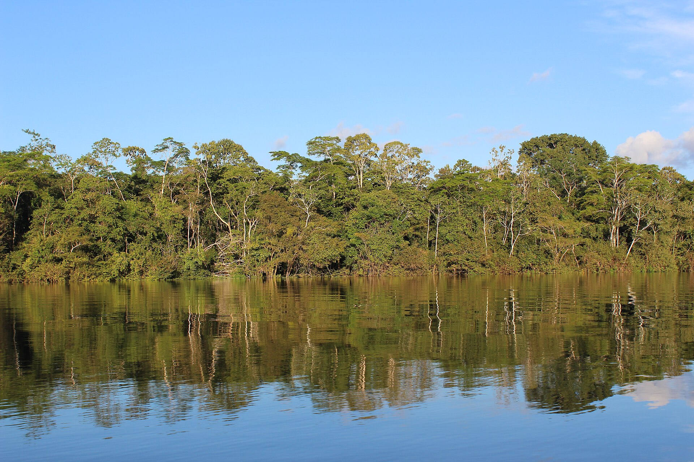
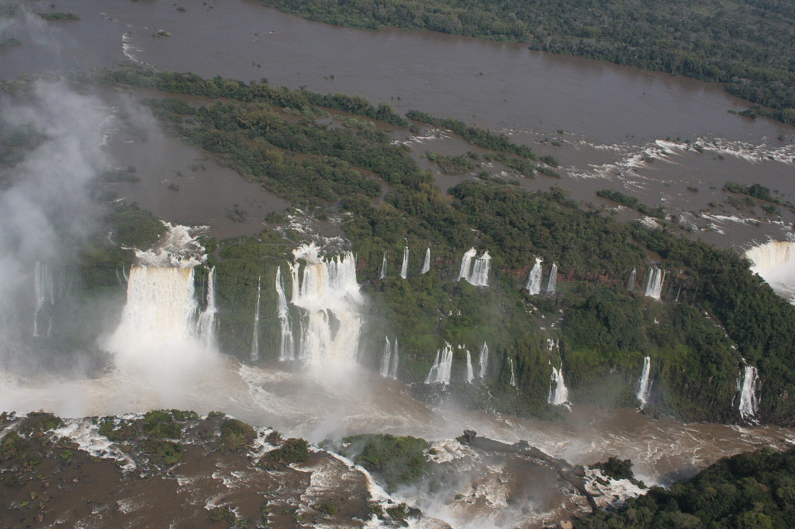

Überblick
Südamerika ist der südliche Teil der westlichen Hemisphäre und in der physischen Geografie der viertgrößte Kontinent. Er schließt an Nordamerika über die Landenge von Panama an und reicht bis Kap Hoorn und Feuerland; die Drake-Passage trennt ihn von Antarktika. Atlantik im Osten, Pazifik im Westen und die Karibik im Norden begrenzen die Landmasse. Die Form ist grob dreieckig: breit im Norden, spitz zulaufend im Süden.
Fläche und Bevölkerung liegen – je nach Quelle und Jahr – in der Größenordnung von rund 17–18 Millionen Quadratkilometern bzw. mehreren Hundert Millionen Einwohnerinnen und Einwohnern; genaue Zahlen schwanken mit Abgrenzung und Zählmethode und werden hier bewusst nicht als Scheingenauigkeit festgeschrieben. Brasilien dominiert flächen- und bevölkerungsmäßig; Argentinien, Kolumbien, Peru, Venezuela, Chile und weitere Staaten prägen politische und kulturelle Vielfalt. Spanisch und Portugiesisch sind die wichtigsten Amtssprachen der Kolonialzeit; indigene Sprachen (u. a. Quechua, Aymara, Guaraní und viele amazonische Sprachen) bleiben lebendig.
Südamerika gilt als Kontinent der Extreme: längste Gebirgskette der Erde (Anden), größtes Flusseinzugsgebiet (Amazonas), eine der trockensten Wüsten (Atacama), ausgedehnte Grasländer (Pampas, Llanos) und eisgeformte Landschaften in Patagonien. Die Biodiversität, besonders im Amazonasbecken und in den Anden-Nebelwäldern, ist außergewöhnlich hoch – und zugleich durch Landnutzung, Bergbau und Klimawandel bedroht. Der Artikel führt physische Großräume, Klima und Bevölkerungsregionen ein und behandelt die Ökologie Amazoniens mit der nötigen Vorsicht gegenüber vereinfachenden Zahlen. Geologisch besteht der Kontinent aus einem westlichen, aktiven Andenrand und östlichen, stabileren Schild- und Beckenlandschaften. Diese Asymmetrie erklärt viele Klimagegensätze und Siedlungsmuster: dicht besiedelte Küsten und Hochlandtäler im Westen und Südosten, riesige, dünner besiedelte Tiefländer im Amazonasraum.
Physische Geografie

Anden
Die Anden ziehen sich etwa 8.850 Kilometer entlang der Westseite des Kontinents von Venezuela und Kolumbien bis nach Feuerland. Hunderte Gipfel übersteigen 4.500 Meter; viele sind vulkanisch. Der höchste Berg außerhalb Asiens ist der Aconcagua an der Grenze Argentinien/Chile mit rund 6.962 Metern. Hochplateaus wie das Altiplano in Peru und Bolivien liegen typischerweise um 3.700 Meter. Kulturlandschaften der Anden – Terrassenfeldbau, Lama- und Alpakahaltung, Bergbaumilieus – zeigen, dass Höhe nicht nur physisches Hindernis, sondern Lebensraum ist. Die Anden entstehen durch Subduktion der Nazca-Platte unter die südamerikanische Platte und erzeugen Erdbeben, Vulkane und scharfe Ost–West-Klimagefälle. Sie sind Wasserscheide, Kulturraum und Verkehrsbarriere zugleich.
Amazonasbecken und Regenwald
Das Amazonasbecken umfasst laut gängigen Angaben nahezu 7 Millionen Quadratkilometer und ist das größte Flusseinzugsgebiet der Welt. Zuflüsse speisen sich unter anderem aus andinen Gletschern und Regenwäldern; der Amazonas führt enorme Süßwassermengen in den Atlantik (in der Größenordnung von über 200.000 Kubikmetern pro Sekunde an der Mündung – Angaben variieren je nach Messstelle und Methode). Der tropische Regenwald Amazoniens macht einen großen Teil der weltweiten Regenwaldfläche aus. Baumartenreichtum auf kleiner Fläche, ein dichtes Kronendach, Lianen und eine enorme Artenvielfalt bei Insekten, Vögeln, Primaten und Fischen kennzeichnen das Biom. Exakte Artzahlen sind unsicher und ändern sich mit der Forschung; sicher ist die ökologische Bedeutung für Kohlenstoffspeicherung, regionalen Wasserhaushalt und globale Biodiversität.
Hochländer und weitere Flusssysteme
Östlich der Anden liegen stabile Schilde und Becken. Die Brasilianischen Hochländer südlich des Amazonas bestehen aus Plateaus und niedrigeren Gebirgen; die Guayana-Hochländer zwischen Amazonas und Orinoco erstrecken sich über Teile Venezuelas, Guyanas, Surinames, Französisch-Guayanas und Nordbrasiliens. Neben dem Amazonas sind Orinoco und das Paraguay–Paraná-System (mit Río de la Plata) die großen Entwässerungsräume. Die Llanos am Orinoco sind Savannen; die Pampas im Süden Argentiniens und angrenzender Gebiete gehören zu den fruchtbarsten Agrarlandschaften des Kontinents. Die Iguaçu-Fälle am Paraná markieren eine bekannte Wasserfallkaskade an der Grenze Brasiliens und Argentiniens.
Atacama, Küsten und Patagonien
An der pazifischen Küste Perus und Chiles liegt die Atacama, oft als eine der trockensten Wüsten der Erde beschrieben. Kalte Meeresströmungen (Humboldt-/Perustrom), Lage im Regenschatten der Anden und stabile Luftschichtung unterdrücken Niederschlag; mancherorts fallen im Jahresmittel nur Bruchteile eines Millimeters Regen, und für einzelne Orte wird berichtet, dass in historischen Aufzeichnungen kein messbarer Regen vorkam. Kupferbergbau ist wirtschaftlich zentral für Chile. Patagonien im Süden Argentiniens und Chiles umfasst Steppen, Plateaus, Fjorde und Gletscher; die Westseite ist feuchter und gebirgiger, die Ostseite trockener. Feuerland und Kap Hoorn bilden den äußersten Süden vor der Passage nach Antarktika.
Böden, Rohstoffe und Naturgefahren
Neben Relief und Flüssen prägen Rohstoffe die Geografie der Nutzung: Kupfer in Chile und Peru, Zinn und Lithium in andinen Hochländern, Eisenerz und Bauxit in Brasilien und den Guayanas, Erdöl in Venezuela und vor den Küsten. Der Bergbau hinterlässt Landschaftsnarben und Konflikte um Wasser und indigene Territorien. Erdbeben und Vulkanausbrüche entlang der Anden sowie Überschwemmungen im Amazonas- und La-Plata-Raum gehören zu den wiederkehrenden Naturgefahren. Küstenstädte am Pazifik müssen Tsunamis und El-Niño-Regen in Planungen einbeziehen.
Klima
Südamerika spannt Klimate von äquatorialem Regenwald über Hochgebirgs- und Wüstenklima bis zu kühlen, stürmischen Breiten Patagoniens. Die Anden steuern Feuchteverteilung: Im tropischen Norden fallen auf beiden Seiten hohe Niederschläge; weiter südlich fangen Osthänge Feuchte aus Amazonas und Atlantik ab, während die Pazifikseite arid bleibt. Südlich etwa der mittleren Breiten kehrt sich das Muster um: Westwinde bringen Regen an die chilenische Küste, während Ostpatagonien im Regenschatten liegt.
Das Amazonasbecken ist ganzjährig warm und feucht, mit regionalen Regen- und Trockenphasen. Die Llanos und Teile des Nordostens Brasiliens kennen ausgeprägte Trockenzeiten. Die Atacama und angrenzende Küstenstreifen bleiben hyperarid. Das Altiplano ist kühl, mit starker Sonneneinstrahlung und nächtlichem Frost. Die Pampas sind gemäßigt und landwirtschaftlich begünstigt. Patagonien und Feuerland sind windreich und kühl; Westwinde und stürmische See prägen den „Roaring Forties“-Gürtel.
El Niño und La Niña beeinflussen Niederschlag und Temperaturen entlang der Pazifikküste und darüber hinaus. Klimawandel, Entwaldung und Gletscherrückgang in den Anden verändern Wasserverfügbarkeit für Städte und Landwirtschaft. Quantitative Projektionen sind regional und modellabhängig; der geografische Grundsatz bleibt: Relief und Ozeanströmungen erzeugen auf kurzer Distanz extreme Gegensätze – von Nebelküste und Wüste zu Regenwald und Hochgebirge. Städteplanung in Lima, Santiago oder São Paulo muss Wasser, Hangrutschungen bzw. Überschwemmungen jeweils anders gewichten; einheitliche „südamerikanische“ Klimarezepte gibt es nicht.
Menschen und Regionen

Indigene Gesellschaften und Kolonialerbe
Vor und während der europäischen Eroberung bestanden komplexe Gesellschaften: Inka-Staat und Vorgängerkulturen in den Anden, amazonische und orinocane Völker mit eigenen Wirtschafts- und Wissenssystemen, Guaraní und viele weitere Gruppen im Osten und Süden. Spanische und portugiesische Kolonialreiche, Versklavung, Mission und spätere Republiken formten Grenzen, Sprachen und Eigentumsordnungen. Indigene Bevölkerungen, Afro-Nachfahren und mestizische Mehrheiten prägen heute Staaten unterschiedlich stark; Landrechte, Extraktivismus und kulturelle Anerkennung sind politische Dauerfragen.
Staaten und Großräume
Brasilien dominiert den Osten und das Amazonastiefland; Portugiesisch und eine föderale Struktur unterscheiden es von den hispanischen Nachbarn. Die Andenstaaten Kolumbien, Ecuador, Peru, Bolivien und Chile verbinden Hochland, Pazifikküste und – je nach Staat – Amazonas-Tiefland. Venezuela und die Guyanas liegen am Nordrand; Argentinien, Uruguay und Paraguay prägen den Süden und die La-Plata-Region. Megastädte wie São Paulo, Buenos Aires, Rio de Janeiro, Bogotá und Lima bündeln Bevölkerung und Wirtschaft; zugleich bleiben amazonische und andine Peripherien dünn besiedelt und infrastrukturell fragil.
Amazonien – Ökologie und Nutzung
Amazonien ist zugleich ökologisches Herzstück und Arena konkurrierender Nutzungen: indigene Territorien und Schutzgebiete, Rinderhaltung, Sojaanbau, Holz, Bergbau, Staudämme und Straßen. Entwaldung und Fragmentierung sind wissenschaftlich belegt und politisch umkämpft; genaue Hektarzahlen ändern sich jährlich und sollten aktuellen Monitoring-Berichten entnommen werden, nicht aus dem Gedächtnis zitiert. Vereinfachungen („die Lunge der Erde“) greifen zu kurz: Der Regenwald speichert Kohlenstoff, treibt regionalen Regenkreislauf und beherbergt Biodiversität, ist aber kein globaler Sauerstofflieferant in dem populären Sinn. Respektvolle Darstellung bedeutet, indigene Wissenssysteme und Rechte ebenso zu nennen wie globale Nachfrage nach Agrar- und Energieexporten.
Kulturgeografische Vielfalt
Musik, Religion und Städtebau spiegeln afroamerikanische, indigene und europäische Stränge – von Andenfesten und amazonischen Kosmologien bis zu afrobrasilianischen Traditionen an der Atlantikküste. Fußball, Telenovelas und Literatur (Magischer Realismus als globales Etikett, das die Vielfalt nur andeutet) exportieren Bilder des Kontinents, die geografische Realität aber nur teilweise abdecken. Binnenmigration vom Land in die Stadt und internationale Migration nach Nordamerika und Europa verändern Bevölkerungsstrukturen fortlaufend. Grenzräume – Amazonas-Dreiländerecke, Andenpässe, die Magellanstraße – sind Kontaktzonen, keine leeren Ränder. Wer Südamerika nur über Regenwald oder Tango denkt, verfehlt Hochlandmetropolen, Graslandökonomien und die maritime Ausrichtung Chiles und Perus.
Vergleiche mit Nordamerika zeigen gemeinsame Kolonialgeschichte und unterschiedliche Indigenitäts- und Sprachpolitiken; der Blick nach Antarktika erinnert daran, dass der äußerste Süden an eine eisfreie Passage und einen vertraglich internationalen Kontinent grenzt.
Südamerika ist eng mit dem Atlantikhandel, der Migration nach Nordamerika und Europa und mit Süd–Süd-Beziehungen verbunden. Der Kontinent bleibt geografisch klar abgegrenzt, kulturell aber vielfältig – von Quechua-Hochlandgemeinden bis zu afrobrasilianischen Küstenkulturen, von patagonischen Schafweiden bis zu karibisch beeinflussten Nordküsten.
Quellen
- Encyclopaedia Britannica – „South America“: https://www.britannica.com/place/South-America
- National Geographic Education – „South America: Physical Geography“: https://education.nationalgeographic.org/resource/south-america-physical-geography/
- Encyclopaedia Britannica – „Andes Mountains“: https://www.britannica.com/place/Andes-Mountains
- Encyclopaedia Britannica – „Amazon River“: https://www.britannica.com/place/Amazon-River
- Encyclopaedia Britannica – „Aconcagua“: https://www.britannica.com/place/Mount-Aconcagua
- Encyclopaedia Britannica – „Atacama Desert“: https://www.britannica.com/place/Atacama-Desert
- Encyclopaedia Britannica – „Patagonia“: https://www.britannica.com/place/Patagonia-region-Argentina-and-Chile
- Encyclopaedia Britannica – „Brazilian Highlands“: https://www.britannica.com/place/Brazilian-Highlands
- Encyclopaedia Britannica – „Orinoco River“: https://www.britannica.com/place/Orinoco-River
- Wikipedia – „South America“ (Überblick): https://en.wikipedia.org/wiki/South_America
- UNESCO – Amazon / World Heritage background: https://whc.unesco.org/
- INPE / Brasilien – Amazon monitoring (PRODES u. a., aktuelles Monitoring): http://www.obt.inpe.br/OBT/assuntos/programas/amazonia/prodes
- NOAA – El Niño / Southern Oscillation: https://www.noaa.gov/
- USGS – Andes / South America tectonics (Hintergrund): https://www.usgs.gov/